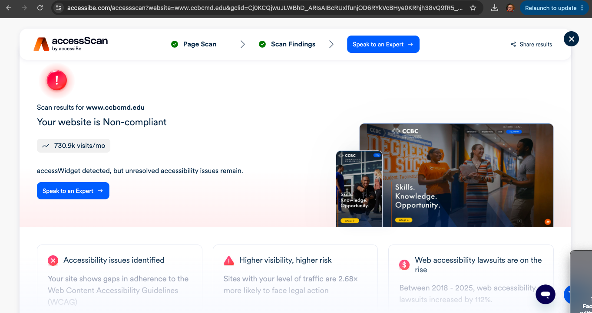
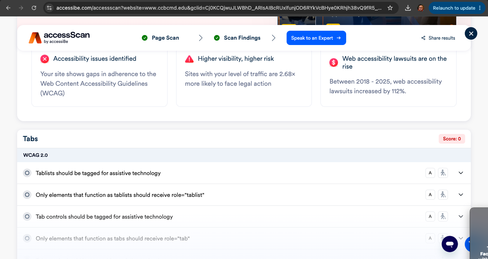
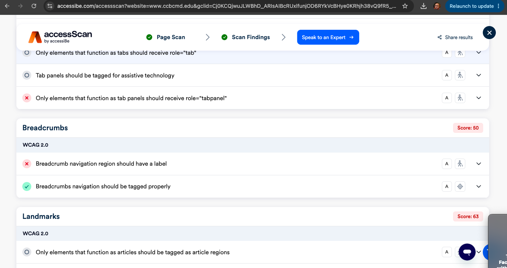
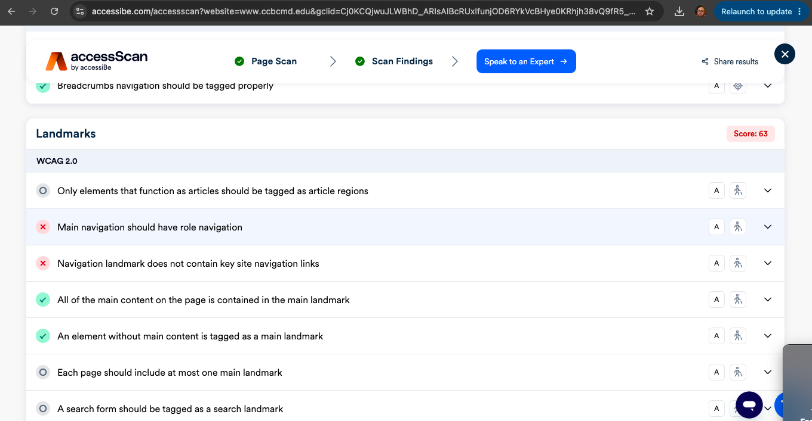

The Community College of Baltimore County (CCBC).
Students, future students, faculty, and staff.
Hierarchical. There's a main homepage with navigation links to the major sections, and from those sections users find more specific information.
Contrast. The text and buttons are noticeable with the background, very easy to read.
Most categories scored 100, but Interactive Content got a 99 and Breadcrumbs got a 50.




Helps users find info and finish tasks. The navigation is organized nicely.
Users can find things in only a few steps because the menu links are clear.
Nice to use and is fitting for a community college.
Fix all the issues the checker found. Label the breadcrumbs, and set up the tab elements correctly.